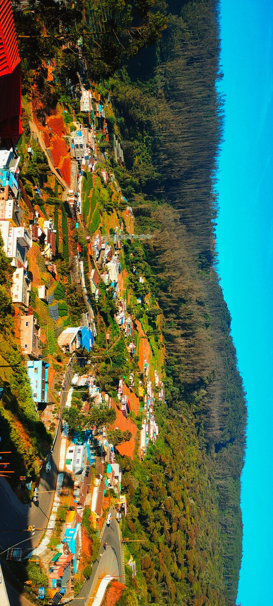
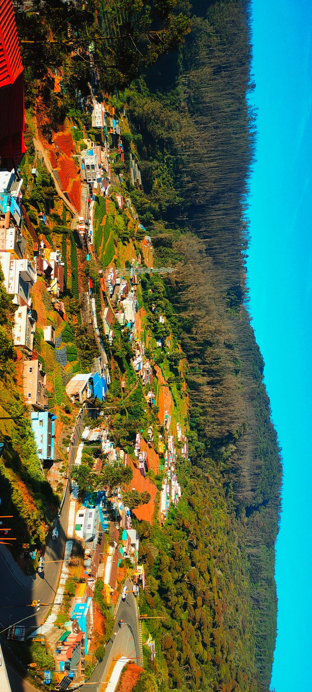
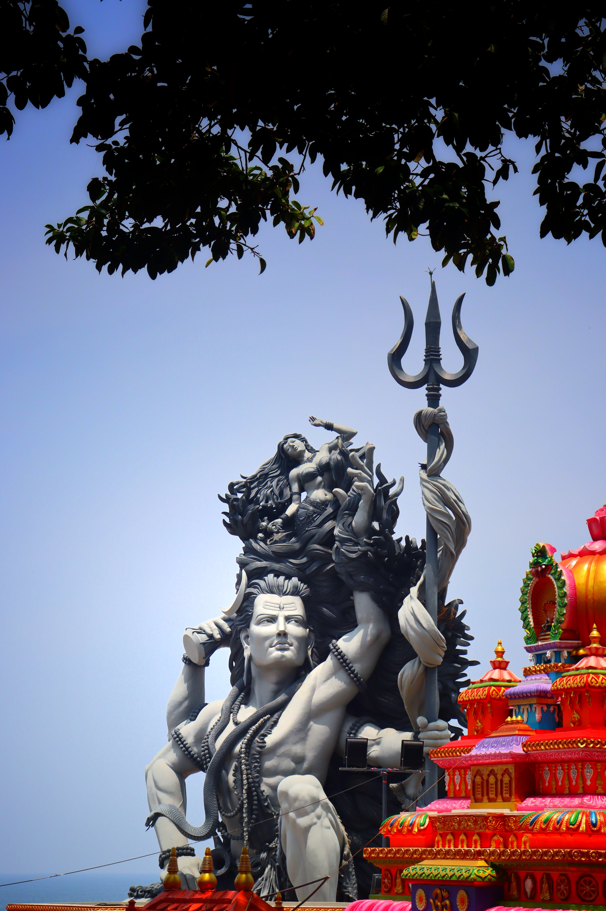
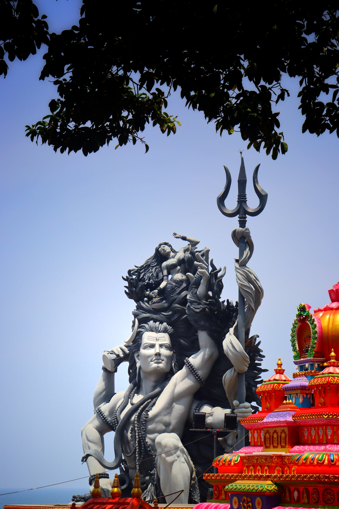

Lokesh Somapuram
Scrum Master & Agile Coach
Certified ScrumMaster & Agile Coach helping product teams deliver faster, improve efficiency, and drive business value.
View Resume
Certified ScrumMaster & Agile Coach helping product teams deliver faster, improve efficiency, and drive business value.
View Resume
I have 5 years and 7 months of experience at DXC Technology as a Business/Quality Analyst. I lead Agile initiatives, facilitate Scrum teams, and drive process improvements to deliver high-quality products.
Led Agile adoption and Scrum facilitation for multiple product teams across domains including Insurance and IT Service Management.
Facilitated Agile transformation across teams to enhance delivery predictability and quality.
Certified Scrum Master (CSM)
FLMI Level 1 (LOMA)
Other Certifications (from Resume)
Here are some of my favorite photographs:

 

 



.jpg)
Email: lokesh.somapuram@gmail.com
LinkedIn: linkedin.com/in/somapuram-lokesh-99a29b218
GitHub: github.com/Somapuram-Lokesh